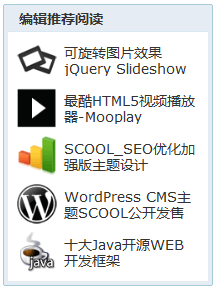

WordPress meta_key的合理利用
简介：WordPress meta_key是个非常实用的东西，不知道大家有没有合理利用呢，本站的uedcms主题中就使用了大量的meta_key，例如左侧栏的推荐文章，这个效果就是靠自定义meta_key来实现的，发布文章是键入一个新的meta_key，如featured_post，然后在右侧的输入框内输...
WordPress meta_key是个非常实用的东西，不知道大家有没有合理利用呢，本站的uedcms主题中就使用了大量的meta_key，例如左侧栏的推荐文章，这个效果就是靠自定义meta_key来实现的，发布文章是键入一个新的meta_key，如featured_post，然后在右侧的输入框内输入你想要的值，我的是调用特色图片，所以就填写了图片地址，这样就可以调用图片，实际效果如下：

wordpress meta_key
wordpress meta_key调用方法也很简单，代码如下：
<?php if (have_posts()) : $recent=new WP_Query("meta_key=featured&showposts=5"); while($recent->have_posts()) : $recent->the_post();?>
<li>
<a href="<?php the_permalink(); ?>">
<?php $featured = get_post_meta($post->ID, 'featured', true) ;?>
<div>
<img src="<?php echo $featured; ?>" alt="<?php the_title();?>"/>
</div>
<div><?php the_title(); ?></div>
</a>
</li>
<?php endwhile; endif; ?>
如果你想更省事的话，那就要强化一下发后台布文章页面了，将以下代码放入wordpress主题 function.php文件内即可轻松实现这个效果了，详细代码：
<?php
add_action('admin_menu', 'featured_meta_box');
add_action('save_post', 'save_featureddata');
$featured_meta_boxes =
array(
"featured" => array(
"name" => "featured",
"std" => "",
"title" => "推荐文章图标地址",
"description" => "请在输入框内输入图标地址.")
);
function featured_meta_boxes() {
global $post, $featured_meta_boxes;
foreach($featured_meta_boxes as $meta_box) {
$meta_box_value = get_post_meta($post->ID, $meta_box['name'], true);
if($meta_box_value == "")
$meta_box_value = $meta_box['std'];
echo'<input type="hidden" name="'.$meta_box['name'].'_noncename" id="'.$meta_box['name'].'_noncename" value="'.wp_create_nonce( plugin_basename(__FILE__) ).'" />';
echo'<input type="text" name="'.$meta_box['name'].'" value="'.$meta_box_value.'" size="100" /><br />';
echo'<p><label for="'.$meta_box['name'].'">'.$meta_box['description'].'</label></p>';
}
}
function featured_meta_box() {
global $theme_name;
if ( function_exists('add_meta_box') ) {
add_meta_box( 'featured-meta-boxes', '推荐文章图标地址', 'featured_meta_boxes', 'post', 'normal', 'high' );
}
}
function save_featureddata( $post_id ) {
global $post, $featured_meta_boxes;
foreach($featured_meta_boxes as $meta_box) {
// Verify
if ( !wp_verify_nonce( $_POST[$meta_box['name'].'_noncename'], plugin_basename(__FILE__) )) {
return $post_id;
}
if ( 'page' == $_POST['post_type'] ) {
if ( !current_user_can( 'edit_page', $post_id ))
return $post_id;
} else {
if ( !current_user_can( 'edit_post', $post_id ))
return $post_id;
}
$data = $_POST[$meta_box['name']];
if(get_post_meta($post_id, $meta_box['name']) == "")
add_post_meta($post_id, $meta_box['name'], $data, true);
elseif($data != get_post_meta($post_id, $meta_box['name'], true))
update_post_meta($post_id, $meta_box['name'], $data);
elseif($data == "")
delete_post_meta($post_id, $meta_box['name'], get_post_meta($post_id, $meta_box['name'], true));
}
}
?>
很不错啊，不过一般分类调用就已经足够了